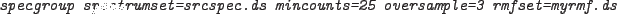
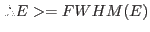

If the number of counts in a spectrum is very high then a statistical grouping can dramatically oversample the instrument resolution. This can cause problems during spectral fitting because the bins are then not completely independent.
A minimum energy width of each group can be enforced by setting the parameter oversample. e.g.

would ensure that no group was narrower than 1/3 of the full width half maximum (FWHM) resolution at the central photon energy of the group.

where the values of FWHM(E) are read for a given instrument from a calibration file (XMM_SPECQUAL_nnnn.CCF for XMM instruments).